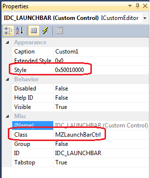

Title: MZLaunchBar Author: Mathias S Email: matsve@result42.com Member ID: 54110 Language: C++ Platform: Windows Technology: MFC Level: Intermediate Description: Quick Program LaunchBar Controller. Similar to the one on the taskbar in Windows XP Section Staitc & Panel Controls SubSection General License: CPOL
I needed sometime like the QuickLaunchBar that you have in Windows XP (And Windows 7 if you enable it). A place where you can have program icons and where they can be started from. I first thougth I should do this by modifing the CToolBarCtrl but with all the requirements I had for this it was eaiser to write a completly custom controller for this. So this MZLaunchBar Controller inherits directly from CWnd.
Adding MZLaunchBar to a dialog.

void CMZLaunchBarDemoDlg::DoDataExchange(CDataExchange* pDX)
{
CDialog::DoDataExchange(pDX);
DDX_Control(pDX, IDC_LAUNCHBAR, m_LaunchBar);
}
Option on when the controller should turn into Edit Mode.
Set them as StyleEx flags in Create or with MZLaunchBar::Style(...)
#define MZBS_DROPADD 0x00000010 // Allow files to be added by dropping them in the MZLaunchBar
#define MZBS_DRAGREARRANGE 0x00000020 // Allow items to be rearrange by dragging them
#define MZBS_CONTEXTMENUWS 0x00000080 // Show a context menu when pressing on whitespace (outside of an icon), Allowing user to Add Separator, and change some options.
#define MZBS_CONTEXTMENU 0x00000100 // Show Item Context Menu
#define MZBS_SHELLMENU 0x00000200 // Show Shell context menu when right clicking on an item. (Must be combined with MZBS_CONTEXTMENU)
#define MZBS_ALLOW_CUSTOMIZE 0x00000400 // Allow user to customize items
#define MZBS_ALLOW_REMOVE 0x00000800 // Allow user to remove items
#define MZBS_LAUNCH_CLICK 0x00002000 // Launch item if icon is single clicked
#define MZBS_LAUNCH_DBLCLICK 0x00004000 // Launch item if icon is double clicked
#define MZBS_LAUNCH_DROPASPARM 0x00008000 // Drop files to be lanuch as parameters to program
#define MZBS_LAUNCHADMIN_SHIFT 0x00010000 // Launch program as Admin if Shift key was pressed while item was clicked/dblclicked
#define MZBS_LAUNCHADMIN_CTRL 0x00020000 // Launch program as Admin if Ctrl key was pressed while item was clicked/dblclicked
#define MZBS_DRAW_HLIGHT_DOWN 0x01000000 // Draw Highlight frame around icon when mouse button is down on icon
#define MZBS_DRAW_HLIGHT_HOVER 0x02000000 // Draw Highlight frame around icon when hover over icon
#define MZBS_ALIGNVCENTER 0x04000000 // Align to vertical center of client area
#define MZBS_ALIGNBOTTOM 0x08000000 // Align to bottom of client area (default is TOP align)
// Initilizing the LaunchBar.
m_LaunchBar.Style(MZBS_DROPADD | MZBS_DRAGREARRANGE | MZBS_LAUNCHADMIN_SHIFT | MZBS_CONTEXTMENUWS | MZBS_CONTEXTMENU
| MZBS_ALLOW_CUSTOMIZE | MZBS_ALLOW_REMOVE| MZBS_LAUNCH_CLICK | MZBS_DRAW_HLIGHT_HOVER | MZBS_LAUNCH_DROPASPARM);
m_LaunchBar.SetIconSize(CSize(32,32), false);
m_LaunchBar.Init(true);
// If you have override Load() then just call it instead
// m_LaunchBar.Load( _T("Launchbar.cfg"));
// Or if you have hardcoded item then just add them.
// If users should not be able to Add/Remove items make sure you do not include style MZBS_DROPADD, MZBS_ALLOW_REMOVE, MZBS_DRAGREARRANGE
m_LaunchBar.AddItem(_T("%WINDIR%\\System32\\notepad.exe"), _T("Notepad"), true);
m_LaunchBar.AddItem(_T("%WINDIR%\\System32\\perfmon.exe"), _T("PerfMon"), true);
m_LaunchBar.AddItem(_T("%WINDIR%\\System32\\winver.exe") , _T("WinVer") , true);
// Add item that uses an alternative icon for for cmd.exe.
auto p = m_LaunchBar.AddItem(_T("%WINDIR%\\System32\\cmd.exe"), _T("Cmd"), false);
p->altIconPath = _T("%WINDIR%\\System32\\shell32.dll");
p->altIconIdx= 32;
m_LaunchBar.UpdateIcon(p.get());
m_LaunchBar.EnableTooltip(true);
Loading and Saving to file is not built in. Just override the Load() and Save() call when adding it
MZLunchBar can show the Windows Shell context menu on icon. But to do that you need to include
#define MZLUNCHBAR_USE_SHELLCONTEXTMENU
And you also need to include ShellContextMenu.cpp/.h into you project, (Created by R. Engels)
You find the ShellContextMenu class here : http://www.codeproject.com/Articles/4025/Use-Shell-ContextMenu-in-your-applications
A basic dialog for the properties dialog for an item is also included. This is however only a basic version of it and you might need to customize it to fit your needs. Look in the CustomizeDlg/ folder in the demo source.
For full history check the header in MZCrumbBar.cpp